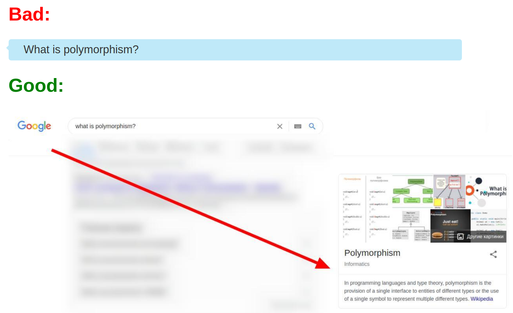

Please learn how to search for answers to questions!
It's easy to Google, isn't it?
What is an array?
Why do we need PHP?
What is bubble sorting?
These kinds of questions you can should google first!
To google means:
But what's wrong with asking such questions in chat rooms/forums?
Almost all of your questions are recently or have been searched for a long time. This means that you will find it in Google and won't disturb other people in chat rooms/forums
So asking questions in chat rooms / forums is forbidden/unethical/bad?
Not really. If you have a question, first Google it, then if you can't find the answer, you can ask your question in forum.
The essence in one picture:
